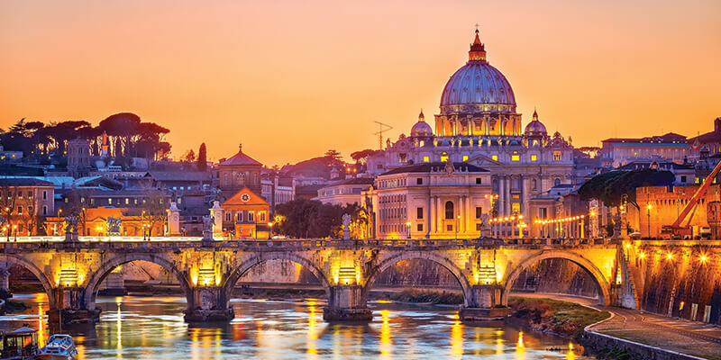

St. Peter's Basilica
St. Peter's Basilica is one of the holiest temples for Christendom and the largest churches in the world. Inside, visitors will find extremely impressive pieces of art one being St Peter who has his right foot worn down due to the touches of the devoted. Visitors can climb to the top of the dome, where a stunning view of St Peter's Square and most of the city awaits them.
Book your tour